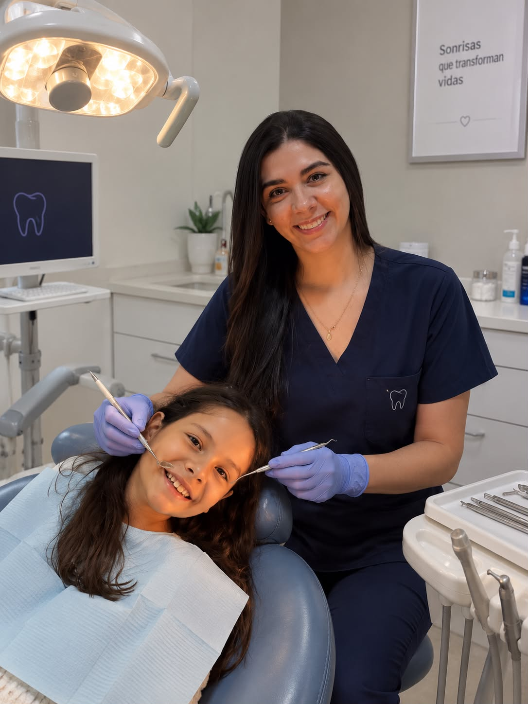
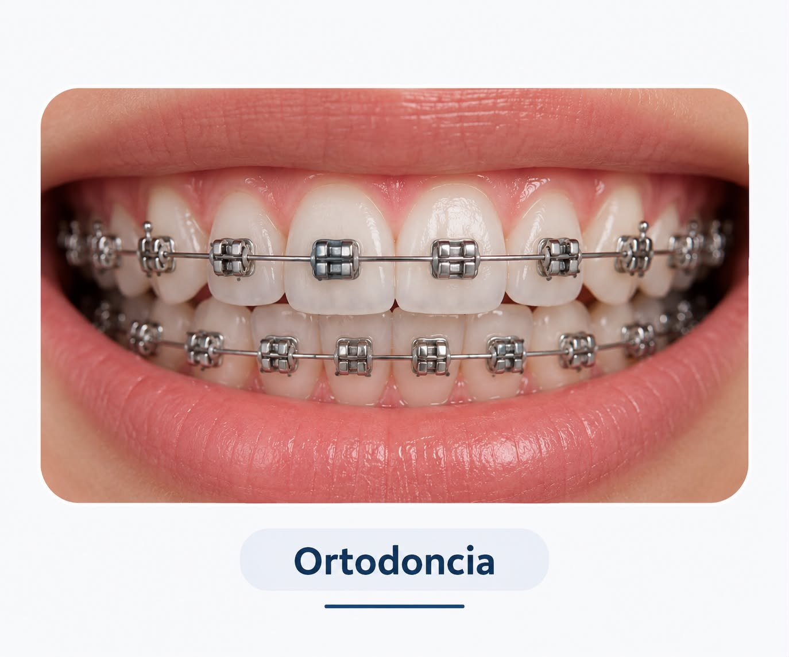
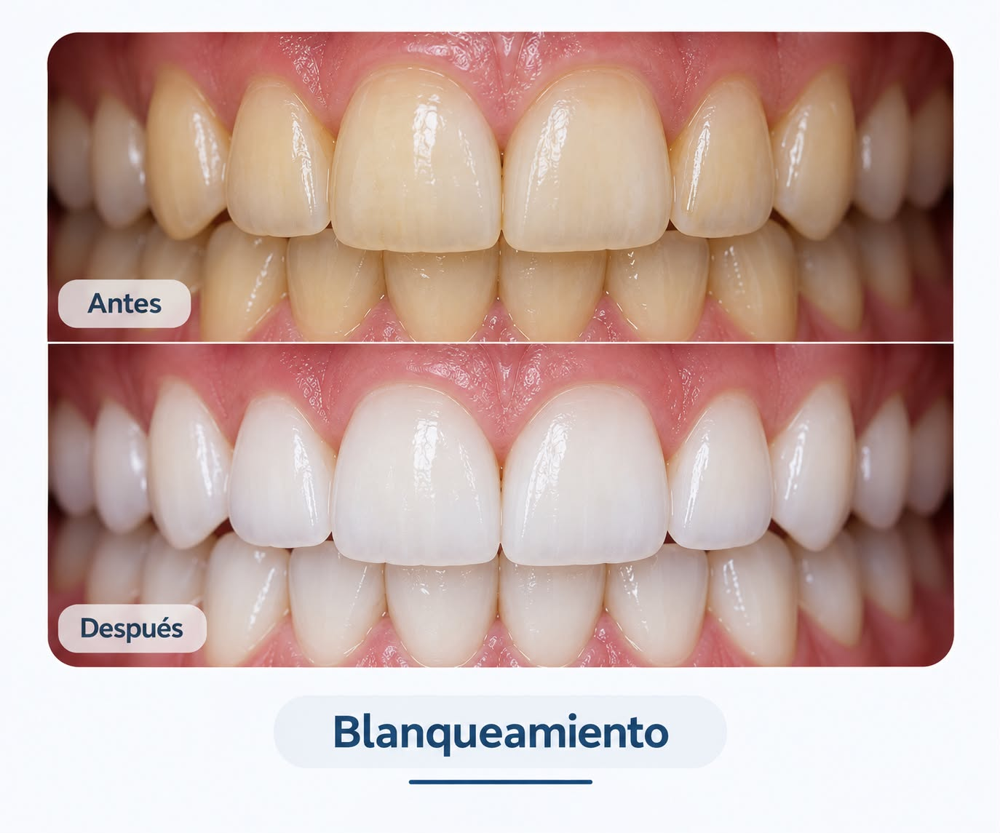
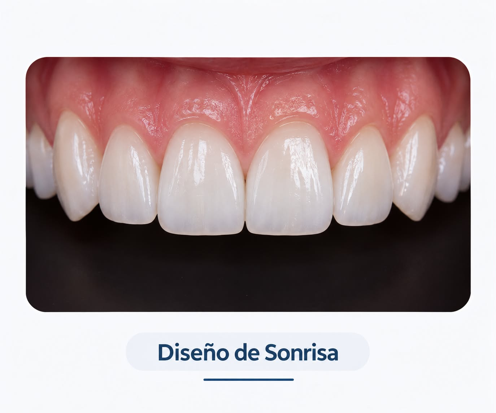

Cuidar tu sonrisa es cuidar tu salud. Descubre consejos, tratamientos y la importancia de una buena higiene oral.
La odontología moderna combina prevención, tecnología y tratamientos especializados para mantener dientes y encías saludables durante toda la vida.
Conocer tratamientosConoce algunos de los servicios más importantes de la odontología moderna.

Detectar problemas a tiempo protege tu salud oral.

Corrige la posición de los dientes con tratamientos especializados.

Mejora el brillo natural de tus dientes con procedimientos seguros.

La sonrisa que siempre has querido
Mantener una buena salud bucal es fundamental para prevenir enfermedades y conservar una sonrisa saludable. Los hábitos de higiene y las visitas periódicas al odontólogo ayudan a detectar problemas a tiempo.
Conoce más sobre salud bucal en la Organización Mundial de la Salud .